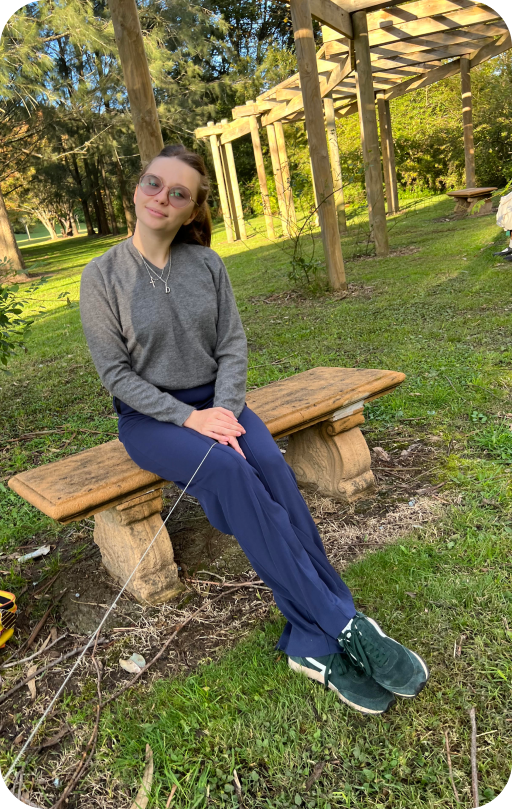

Having travelled to different countries provided me with inspiration for the design. Taking inspiration from various 3D advertisements, digital illustrations, and cutting-edge technologies. In order to be involved in this world of design, I decided to become one. My experience began with studying 3D Max and Photoshop and then graduating from Monath University with a degree in UX/UI design. As a UX designer, I am always learning, growing, and soaking up knowledge; most importantly, I strive to become a better UX designer every day by making progress towards my goal.
I hope my interdisciplinary skillset can help solve problems with creative ideas. The basis of my projects is empathy for users and understanding what users want to see in an easy-to-use manner. The ultimate goal for me would be to create different solutions to problems related to environmental and social issue.
These are my stories, but I would love to hear more about yours! Feel free to drop me an email at
diananavert@gmail.com